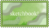

today (16th of sept) we learnt more css basics so now i can do cool things
which is so freaking cool i love css
evidently i already knew text colors n other cool stuff from playing around but now YOU get to see me play in real time (sorta) (preserved) (you get it)
i also learnt you have to keep css seperate otherwise the code might
and that would suck bad
still working on finding cutie graphics for button making bc i love my worm buttons

but i know there must be a more fun way!! i will find as many pngs as i need to complete my goals!!
also finally figured out how to center my nav bar!! css is: img gets display: inline-block; and nav (which i close my nav bar in) gets text-align: center; which makes it do what its doin at the top!!
(9/23/26) okay i didnt know it wasnt a new page for every week! my bad but i organize better this way so you get this. my nav system is image buttons because theyare so stylizable and i adore them! but just for you and your whims and wishes i changed the background color of my nav system! wow! so cool! i liked changing the background color it made my nav bar more noticable and it will only get better and cooler over time- especially if i change the buttons to better buttons one day... but ive been too consistent so far so maybe i won't because i'd have to change them all and thats a pain to recode. maybe one day ill switch over to text navigation... but i love the way my buttons look! and ive been doing them for weeks!! i definitely want a group of buttons in a line on my home page still, though. i love the fat footer!!
soon to see page 3 for 9/30/26 reflection